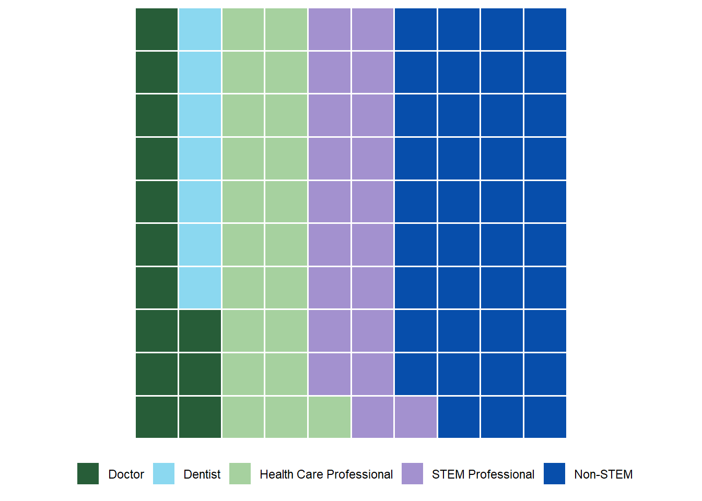
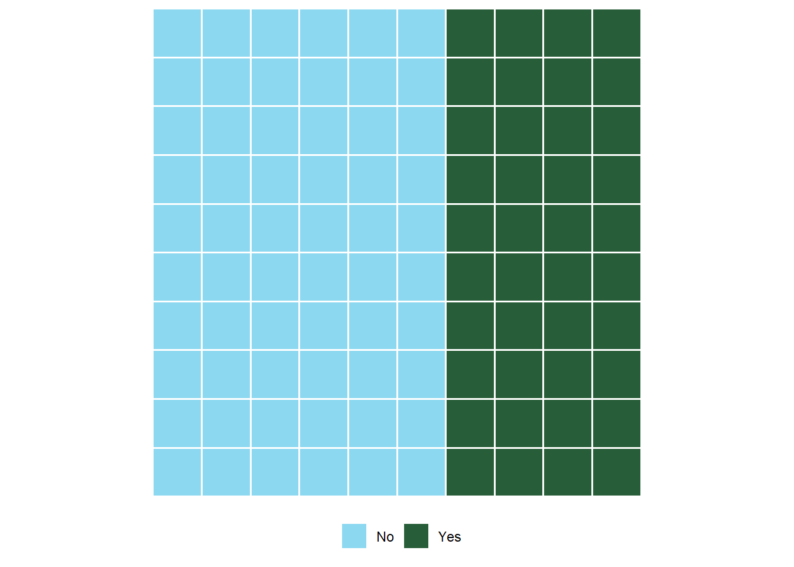

| Category | Statement |
|---|---|
| Science Identity | I see myself as a biology person. |
| Science Identity | I see myself as a science person. |
| Science Identity | I see myself as a scientist. |
| Science Identity | Other people (friends/family) see me as a science person. |
| Science Identity | My science instructors see me as a science person. |
| Career Motivation | Learning science will help me get a good job. |
| Career Motivation | Understanding science will benefit me in my career. |
| Career Motivation | Knowing science will give me a career advantage. |
| Career Motivation | I will use science problem-solving skills in my career. |
| Career Motivation | My career will involve science. |
| Instrinsic Motivation | Learning science is interesting. |
| Instrinsic Motivation | I am curious about discoveries in science. |
| Instrinsic Motivation | The science I learn is relevant to my life. |
| Instrinsic Motivation | Learning science makes my life more meaningful. |
| Instrinsic Motivation | I enjoy learning science. |
| Self-Determination | I study hard to learn science. |
| Self-Determination | I prepare well for science tests and labs. |
| Self-Determination | I put enough effort into learning science. |
| Self-Determination | I spend a lot of time learning science. |
| Self-Determination | I use strategies to learn science well. |
| Self-Efficacy | I am confident that I will do well on science labs and projects. |
| Self-Efficacy | I believe I can earn a grade of 'A' in science. |
| Self-Efficacy | I am confident I will do well on science tests. |
| Self-Efficacy | I believe I can master science knowledge and skills. |
| Grade Motivation | Scoring high on science tests and labs matters to me. |
| Grade Motivation | It is important that I get an 'A' in science. |
| Grade Motivation | I think about the grade I will get in science. |
| Grade Motivation | Getting a good science grade is important to me. |
| Grade Motivation | I like to do better than other students on science tests. |
| Value of Peer Interactions | My college science classes are more enjoyable when I work with other students. |
| Value of Peer Interactions | I understand more when my classmates participate in college classroom discussions. |
| Value of Peer Interactions | I learn best in college science classes when I work with classmates. |
| Value of Peer Interactions | The amount I understand is increased by classmates' ideas in my college science classes. |
| Value of Peer Interactions | When classmates share their ideas in college science classes, this helps me learn. |
| Sense of Belonging | When I am in a science setting, I feel a connection with the science community. |
| Sense of Belonging | When I am in a science setting, I feel respected. |
| Sense of Belonging | When I am in a science setting, I feel comfortable. |
| Sense of Belonging | When I am in a science setting, I trust my instructors to be committed to helping me learn. |
| Sense of Belonging | When I am in a science setting, I enjoy being an active participant. |
| Sense of Belonging | When I am in a science setting, I try to say as little as possible. |
| Competency in Science | I am good at solving complicated scientific problems. |
| Competency in Science | I read websites articles or books about scientific issues. |
| Competency in Science | I work on a project involving scientific concepts. |
| Competency in Science | I think about how my life is affected by science. |
| Community in Science | To what extent is serving the community important to scientific work? |
| Community in Science | To what extent is working with people important to scientific work? |
| Community in Science | To what extent is helping others important to scientific work? |
| Community in Science | To what extent is connecting with others important to scientific work? |
ABRCMS 2023
Prescribing Passion: Medical Experiences Influence on Students’ Relationship with Science from Pre and Post Semester Surveys at an Open-Enrollment Institution
Welcome to the website for our poster! It is here we will go through some of the traditional aspects of a poster, including the “Introduction”, “Methods”, “Results”, and “Conclusion”. If you have any questions, please do not hesitate to reach out to Porter at portergbischoff@gmail.com !
Abstract
Prior research has investigated the recruitment and retention of certain student identities (like gender (Master 2021), person excluded because of ethnicity or race (PEER) (Museus et al., 2010), and first-generation students (Bettencourt et al., 2020)) in STEM. No research has investigated the impact of having medical experiences on these groups. As such, our research questions were: What percentage of students indicate that they have medical experiences (Research Question #1)? Are medical experiences a benefit or barrier to students connecting and engaging with science? Specifically, do students who have medical experiences have higher or lower science motivation, sense of belonging, and science relevance (Research Question #2)?
Data were collected from 366 students who were taking biology classes ranging from introductory biology for non-majors to advanced biology. All data were collected in a pre-survey/post-survey format. Students were asked if they had a medical experience, defined as: “Have you ever had a medical experience (hospitalization, chronic medical condition, and/or issues with mental, physical, emotional health etc.)?” Surprisingly, 57% of students surveyed reported having a medical experience and 22% reported having a chronic condition, indicating these are indeed an important and large identity to investigate further. At the end of the semester, all students had significantly higher science identity, interest in science, sense of belonging, and value of the relevance of science. However, having medical experiences did not relate to consistent changes in constructs for all students. In contrast, consistent increases in constructs were found for first generation students with medical experiences such as: career value, interest, actions to promote success, self-efficacy, and sense of belonging. Information on the impact medical experiences can have on students from different demographics is crucial to investigate as science instructors modify course content and pedagogy to be more inclusive of all identities in the student population.
Background
Connections to STEM:
- STEM success linked to community ties (Estrada et. al, 2011).
- Strong science community connection boosts success (Christe et. al, 2013).
- STEM success influenced by community ties, identity, and engagement (Nadelson et. al, 2017).
- Vital STEM community connection for underserved students (Chemers et. al, 2011).
Impact of Medical Conditions:
- Med school challenges for those with health issues (Pagnin et. al, 2013).
- Health conditions increase stress and social disconnection (Campagne et. al, 2019).
Motivation for the Project
Porter has had a slew of medical experiences, and these experiences led him to pursue a career path in medicine. While going through his undergraduate experience, preparing for medical school, he found a real passion for science as well as medicine. Because this was relatively late in his education, he wishes that he knew this passion he had before his undergraduate studies. Therefore, this project was born, hoping to find that Porter wasn’t uncommon in his experience and assisting other students understand their passions for science sooner than later. To learn more about how this project became to be, please go to this link!
Methods
We used an adapted survey from other literature to find information regarding STEM motivation. This survey was given pre-semester and post-semester to 14 different Biology courses at Utah Valley University. These classes had students who were both STEM majors and non-majors, as these classes were generally General Education classes. Utah Valley University is an open enrollment institution, making this data an interesting set to explore.
390 students answered the pre/post-semester surveys. We have a large number of pre-semester data, but only 390 responded to both the beginning and end of the semester survey.
Aspects of the Survey
STEM Motivation Questions
Here are the questions that we asked to determine the different aspects of STEM motivation.
Statistical Analysis
We used Pearson Correlations to properly understand the significance data for each of the aspects. We are excited to continue doing analysis on this data set, as we know that we can dive deeper into it.
Technology
SPSS was used to complete the Pearson Correlation. R packages were used, with corrplot to create the correlation plot, waffle to create the demographic plots, and ggplot2, dplyr, and gridExtra to create the pre/post semester change plot.
Results
To see the R code for this, follow this link!
Each block represents 1%, but there are some demographics that have less than 1%. These are identified by 1 block, though they are smaller than the 1%.
Demographics
Major

The data indicates the distribution of career aspirations among the respondents. Approximately 29% of them expressed an interest in Biology, while Non-biology STEM fields accounted for around 16% of the responses. Pre-Professional aspirations represented approximately 21% of the respondents, and Non-STEM career paths comprised about 34% of the total aspirations reported.
Year in School
The data represents the distribution of students across different academic years. Among the students surveyed, 36% were Freshmen, 31% were Sophomores, 18% were Juniors, and the remaining 22% were Seniors.
Career Aspiration

Non-STEM took the largest percent of the graph with 39%. STEM professionals took nearly twenty percent (20%), which was similar to the 21% of those who wished to be health care professionals. Those who wish to be a dentist or a doctor took a combined 20% (with those who wish to be dentists taking 7% and those who wished to be doctors taking 13%).
Ethnicity

The data illustrates the racial and ethnic distribution of the surveyed individuals. Among the respondents, 1.6% identified as Black, 0.6% as Native American, 0.2% as Middle Eastern, 3.8% as Asian, 6.4% as Latina/o, 1.6% as Multiracial, 1% as Pacific Islander, and the majority, 78.7%, identified as White.
Gender
The data represents the gender distribution of the respondents. Among those surveyed, 50.8% identified as Men, 0.5% as Transgender, 46% as Women, and 1.3% as Fluid / Gender Non-Conforming.
Religious?

The data indicates the distribution of respondents based on their religious affiliations. Among those surveyed, approximately 27% identified as Non-Religious, while around 73% identified as Religious.
First Generation Student?
The data represents the distribution of students based on their generational status. Among those surveyed, approximately 76% identified as Continuing Generation Students (at least one parent attended college), while around 24% identified as First Generation Students (no parents attended college).
Medical Experience?

The data illustrates the percentage of those who identified to have had a medical experience. Among those surveyed, approximately 44% answered “No” while around 56% answered “Yes”.
Chronic Condition?

Of those who identified as had a medical experience, approximately 60% answered “No” while around 40% answered “Yes” to whether they have a chronic condition.
Pre-Semester
Heatmap
library(ggplot2)
pre <- read.csv("pre.csv")
# Assuming 'post' is your data frame
# If not, replace 'post' with the actual name of your data frame
# Convert the 'variable' column to a factor to ensure correct ordering
pre$variable <- factor(pre$variable, levels = unique(pre$variable))
# Create a heatmap with borders
pre_heatmap <- ggplot(pre, aes(x = group, y = variable, fill = mean)) +
geom_tile(color = "black", size = 0.5, height = 0.75) + # Add borders and adjust position
geom_text(aes(label = sprintf("%.2f", mean)), vjust = .5, size = 4, color = "white") + # Add mean values
scale_fill_gradient(low = "yellow", high = "blue", limits = c(1, 5)) +
theme_minimal() +
theme(axis.text.x = element_text(angle = 0, vjust = 1, hjust = 0.5),
legend.position = "bottom") +
labs(title = "Pre-Semester", x = "", y = "", fill = "Mean")Warning: Using `size` aesthetic for lines was deprecated in ggplot2 3.4.0.
ℹ Please use `linewidth` instead.# Print the heatmap
print(pre_heatmap)Spider Chart
# Load the required libraries
library(fmsb)
library(tidyr)
# Read your data from the CSV file
file_path <- "pre.csv"
data <- read.csv(file_path)
# Select only the relevant columns (group, variable, mean)
data_selected <- data[, c("group", "variable", "mean")]
# Reshape the data for spider chart
data_wide <- spread(data_selected, key = "variable", value = "mean")
# To use the fmsb package, add max and min values for each measure
data_wide <- rbind(rep(5, ncol(data_wide) - 1), rep(1, ncol(data_wide) - 1), data_wide[, -1])
# Color vectors for customization
colors_border <- c("#FFD133", "#3372FF")
colors_in <- adjustcolor(c("#FFD133", "#3372FF"), alpha.f = 0.4)
# Create the radar chart with customization options
radarchart(data_wide,
axistype = 1,
pcol = colors_border,
pfcol = colors_in,
plwd = 2,
plty = 1,
cglcol = "grey",
cglty = 1,
axislabcol = "grey",
caxislabels = seq(1, 5, 1), # Adjust the axis labels as needed
cglwd = 0.8,
vlcex = 0.8,
vlcol = rep("gray", ncol(data_wide) - 1)
) Warning in plot.window(...): "vlcol" is not a graphical parameterWarning in plot.xy(xy, type, ...): "vlcol" is not a graphical parameterWarning in title(...): "vlcol" is not a graphical parameter# Add legend
legend("bottomright", legend = c("With Medical Experiences", "No Medical Conditions"), fill = colors_in, border = colors_border, bty = "o", cex = .8)
# Add title
title(main = "Pre-Semester", col.main = "black", font.main = 3, cex.main = 1.2)Post-Semester
Heatmap
library(ggplot2)
post <- read.csv("post.csv")
# Assuming 'post' is your data frame
# If not, replace 'post' with the actual name of your data frame
# Convert the 'variable' column to a factor to ensure correct ordering
post$variable <- factor(post$variable, levels = unique(post$variable))
# Create a heatmap with borders
post_heatmap <- ggplot(post, aes(x = group, y = variable, fill = mean)) +
geom_tile(color = "black", size = 0.5, height = 0.75) + # Add borders and adjust position
geom_text(aes(label = sprintf("%.2f", mean)), vjust = .5, size = 4, color = "white") + # Add mean values
scale_fill_gradient(low = "magenta", high = "seagreen3", limits = c(1, 5)) +
theme_minimal() +
theme(axis.text.x = element_text(angle = 0, vjust = 1, hjust = 0.5),
legend.position = "bottom") +
labs(title = "Post-Semester", x = "", y = "", fill = "Mean")
# Print the heatmap
print(post_heatmap)Spider Chart
# Load the required libraries
library(fmsb)
# Read your data from the CSV file
file_path <- "post.csv"
data <- read.csv(file_path)
# Select only the relevant columns (group, variable, mean)
data_selected <- data[, c("group", "variable", "mean")]
# Reshape the data for spider chart
data_wide <- spread(data_selected, key = "variable", value = "mean")
# To use the fmsb package, add max and min values for each measure
data_wide <- rbind(rep(5, ncol(data_wide) - 1), rep(1, ncol(data_wide) - 1), data_wide[, -1])
# Color vectors for customization
colors_border <- c("#23b083", "#CC33FF")
colors_in <- adjustcolor(c("#23b083", "#CC33FF"), alpha.f = 0.4)
# Create the radar chart with customization options
radarchart(data_wide,
axistype = 1,
pcol = colors_border,
pfcol = colors_in,
plwd = 2,
plty = 1,
cglcol = "grey",
cglty = 1,
axislabcol = "grey",
caxislabels = seq(1, 5, 1), # Adjust the axis labels as needed
cglwd = 0.8,
vlcex = 0.8,
vlcol = rep("gray", ncol(data_wide) - 1)
) Warning in plot.window(...): "vlcol" is not a graphical parameterWarning in plot.xy(xy, type, ...): "vlcol" is not a graphical parameterWarning in title(...): "vlcol" is not a graphical parameter# Add legend
legend("bottomright", legend = c("With Medical Experiences", "No Medical Conditions"), fill = colors_in, border = colors_border, bty = "o", cex = .8)
# Add title
title(main = "Post-Semester", col.main = "black", font.main = 3, cex.main = 1.2)Pre/Post-Semester Comparison
Heatmap
library(ggplot2)
comp <- read.csv("comp.csv")
# Assuming 'comp' is your data frame
# If not, replace 'comp' with the actual name of your data frame
# Convert the 'variable' column to a factor to ensure correct ordering
comp$variable <- factor(comp$variable, levels = unique(comp$variable))
# Create a heatmap with borders
comp_heatmap <- ggplot(comp, aes(x = group, y = variable, fill = mean)) +
geom_tile(color = "black", size = 0.5, height = 0.75) + # Add borders and adjust position
geom_text(aes(label = sprintf("%.2f", mean)), vjust = .5, size = 4, color = "white") + # Add mean values
scale_fill_gradient(low = "tomato", high = "deepskyblue", limits = c(1, 5)) +
theme_minimal() +
theme(axis.text.x = element_text(angle = 0, vjust = 1, hjust = 0.5),
legend.position = "bottom") +
labs(title = "Comparison Pre/Post", x = "", y = "", fill = "Mean")
# Print the heatmap
print(comp_heatmap)
Spider Chart
# Load the required libraries
library(fmsb)
# Read your data from the CSV file
file_path <- "comp.csv"
data <- read.csv(file_path)
# Select only the relevant columns (group, variable, mean)
data_selected <- data[, c("group", "variable", "mean")]
# Reshape the data for spider chart
data_wide <- spread(data_selected, key = "variable", value = "mean")
# To use the fmsb package, add max and min values for each measure
data_wide <- rbind(rep(5, ncol(data_wide) - 1), rep(1, ncol(data_wide) - 1), data_wide[, -1])
# Color vectors for customization
colors_border <- c("#20839e", "#FF3347")
colors_in <- adjustcolor(c("#20839e", "#FF3347"), alpha.f = 0.4)
# Create the radar chart with customization options
radarchart(data_wide,
axistype = 1,
pcol = colors_border,
pfcol = colors_in,
plwd = 2,
plty = 1,
cglcol = "grey",
cglty = 1,
axislabcol = "grey",
caxislabels = seq(1, 5, 1), # Adjust the axis labels as needed
cglwd = 0.8,
vlcex = 0.8,
vlcol = rep("gray", ncol(data_wide) - 1)
) Warning in plot.window(...): "vlcol" is not a graphical parameterWarning in plot.xy(xy, type, ...): "vlcol" is not a graphical parameterWarning in title(...): "vlcol" is not a graphical parameter# Add legend
legend("bottomright", legend = c("Post-Semester", "Pre-Semester"), fill = colors_in, border = colors_border, bty = "o", cex = .8)
# Add title
title(main = "Pre/Post-Semester Comparison", col.main = "black", font.main = 3, cex.main = 1.2)Conclusion
- STEM motivation is significantly influenced by medical experiences.
- Experiences in classrooms through the semester can influence student’s STEM motivation
- In this selection of students, STEM motivation increases through the semester
Importance
In the context of a study exploring students’ STEM (Science, Technology, Engineering, and Mathematics) motivation, particularly in relation to medical experiences and the impact of classroom experiences throughout the semester, the following findings are crucial:
Significant Influence of Medical Experiences on STEM Motivation:
The research indicates a substantial connection between students’ STEM motivation and their exposure to medical experiences. Understanding how these medical experiences contribute to or shape STEM motivation provides valuable insights into the factors that drive students’ interest in these fields. Classroom Experiences Throughout the Semester as Motivational Factors:
Classroom interactions and experiences play a pivotal role in shaping students’ STEM motivation. The study highlights the importance of examining how various aspects of the classroom environment, teaching methods, and curriculum content influence students’ motivation to pursue STEM disciplines. Identifying these specific factors is essential for creating effective strategies to enhance STEM motivation. Temporal Evolution of STEM Motivation:
A notable trend observed in this cohort of students is the increase in STEM motivation throughout the semester. This temporal evolution suggests that the learning experiences and educational environment have a positive impact on students’ motivation over time. Analyzing the factors contributing to this increase can provide valuable insights into effective pedagogical approaches and interventions. In summary, these findings collectively underscore the complex interplay between medical experiences, classroom dynamics, and the temporal evolution of STEM motivation. Understanding these relationships is crucial for educators, policymakers, and researchers seeking to enhance and sustain students’ interest and motivation in STEM disciplines. This comprehensive perspective contributes to the broader dialogue on educational strategies and interventions aimed at fostering a sustained passion for STEM subjects among students.
Next Steps
Building upon the findings of this study, it becomes imperative for science instructors and institutions to recognize the broader implications, particularly in the context of students with medical experiences, chronic conditions, and the unique challenges faced by first-generation students. The insights gleaned from the examination of STEM motivation in these specific cohorts can inform meaningful adjustments in course content and pedagogy to foster inclusivity and support.
As the study suggests a significant influence of medical experiences and a temporal evolution of STEM motivation, it underscores the need for a nuanced and adaptable educational approach. In acknowledging the diverse identities shaped by medical experiences, it becomes essential to move beyond a one-size-fits-all model and embrace a student-centered approach.
Moreover, the study aligns with a larger initiative exploring the impact of being a first-generation student and dealing with medical conditions or chronic illnesses on STEM motivation. This intersectionality highlights the complexity of students’ experiences and the importance of tailored support mechanisms.
In light of these findings, science education should evolve towards inclusivity, where students with varied backgrounds and medical histories feel not only welcomed but empowered. Institutions can play a pivotal role by providing resources that cater to the specific needs of these students. Emphasizing inclusivity not only enhances the educational journey of individuals with medical experiences but also contributes to a more diverse and innovative scientific community.
In conclusion, the implications of this study extend beyond the immediate findings, urging a transformation in science education that is considerate of the multifaceted identities of students. By embracing inclusivity and tailoring support, institutions can contribute to a more equitable and enriched learning environment, fostering the next generation of diverse and motivated STEM professionals.